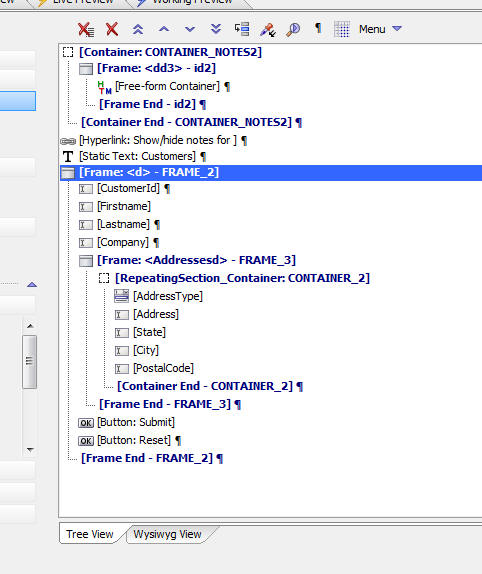

Dialog Component - Tree View - Easier to Associate Container Ends with their Start Entry
The Tree View in the Dialog component now puts an Id in the text for the [Container End], [Frame End] and [Tab End] entries in the tree list, as shown below.